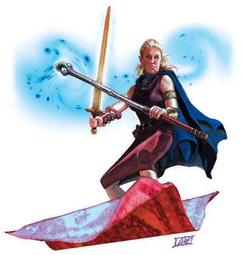

奥法骑士同时学习武艺和奥术，因此能够赏给敌人一颗火球后，再拔出长剑冲锋。他们可以施展魔法对付战士，挥舞刀剑对付法师，并且也对自己的这种能力感到十分自豪。
奥法骑士既是一名出众的战士，又是一名优秀的施法者，但同时进行这两种训练需要花费大量时间，这也让他们在社会中显得非常孤独。奥法骑士与战士和法师的关系并不真正融洽，因此他们大多数还是最终选择离开法术学校，进入佣兵行会，最后加入冒险者的队伍。
想要成为奥法骑士的角色都必须在武技和奥术上同时有所擅长，因此几乎所有的奥法骑士都是兼职人物，战士/法师当然是最常见的组合。同时也有一些奥法骑士原先曾经是吟游诗人，甚至圣武士/术士进阶奥法骑士也并非没有前例。
战斗和法术知识是让奥法骑士开始冒险的最大动力，他们通常愿意与高级的战士或是法师合作，甚至有些奥法骑士称自己的队友为老师，向他们学习武艺或是奥术的秘密。

生命骰：d6
进阶要求：
想要成为一名奥法骑士，角色必须满足下述条件：
武器擅长：角色必须擅长所有军用武器
法术：角色必须能够施展3级奥术
本职技能（以及技能的关键属性）：专注（体质），手艺（智力），解读文书（智力），跳跃（力量），知识（神秘）（智力），知识（皇室贵族）（智力），骑乘（敏捷），观言察色（感知），法术辨识（智力）以及游泳（力量）。技能的详细说明，请参见玩家手册第四章。
每等级技能点数：2+智力调整值
表6-7 奥法骑士
等级 基本攻击加值 坚韧豁免 反射豁免 意志豁免 特殊
1 +1 +2 +0 +0 额外专长
2 +2 +3 +0 +0 奥术施法者等级+1
3 +3 +3 +1 +1 奥术施法者等级+1
4 +4 +4 +1 +1 奥术施法者等级+1
5 +5 +4 +1 +1 奥术施法者等级+1
6 +6 +5 +2 +2 奥术施法者等级+1
7 +7 +5 +2 +2 奥术施法者等级+1
8 +8 +6 +2 +2 奥术施法者等级+1
9 +9 +6 +3 +3 奥术施法者等级+1
10 +10 +7 +3 +3 奥术施法者等级+1
职业特性：
擅长武器及防具：奥法骑士不擅长任何武器或防具。
额外专长：奥法骑士进阶时，可以从战士额外专长列表中选择1项额外专长。本专长属于每3级获得的1个专长以外。要选择某项专长，角色必须满足前提条件，包括“武器专精”所必须4级以上战士等级。
法术：从2级开始，奥法骑士每升一级，每日法术数量会增加，就像之前的施法职业一样，但不能获得之前施法职业等级的其它能力（如：额外超魔专长或制造物品专长，吟游诗人或刺客的能力）。奥法骑士等级加上所具备的其它施法职业等级，决定其每日法术数量、可知法术与施法者等级。若人物在成为奥法骑士之前拥有多个施法职业，则必须选择要将此升级的奥法骑士等级加在哪一种施法职业上，以决定新的每日法术数量。